Necochea · Buenos Aires · Cocina española de autor
Del mar a la mesa · Ingredientes frescos, tradición española
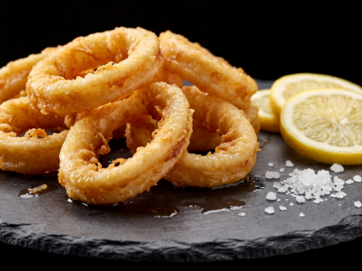
🦑Próximamente
Calamares frescos cortados en anillos, rebozados en harina y fritos hasta lograr una costra dorada y crujiente. Servidos con limón y alioli. El clásico imprescindible de la Taberna.
Entrada · Frita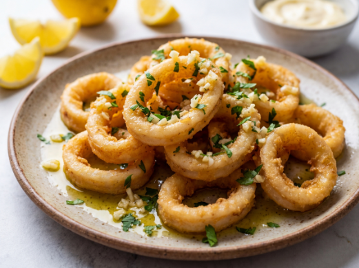
🦑Próximamente
Las rabas clásicas elevadas con un manto de provenzal: ajo, perejil fresco picado y aceite de oliva. Aromáticas, doradas, perfectas para compartir.
Entrada · Provenzal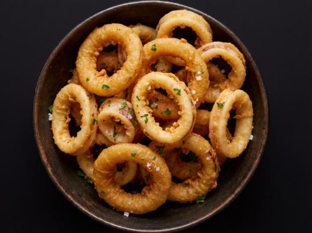
🦑Próximamente
Combinación irresistible de rabas tiernas y aros de cebolla dulce, rebozados juntos y fritos hasta el punto exacto. Crocantes, sabrosos, difíciles de parar.
Entrada · Para Compartir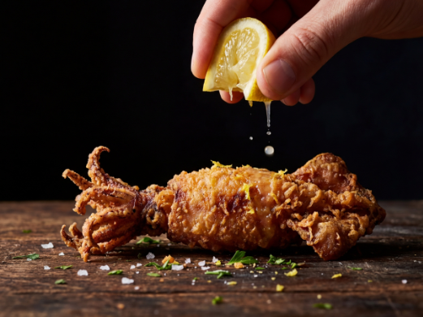
🦑Próximamente
Calamaretes enteros y tiernos, apenas rebozados y fritos en aceite bien caliente. Su tamaño pequeño los hace más sabrosos y crujientes que los anillos tradicionales.
Entrada · Frita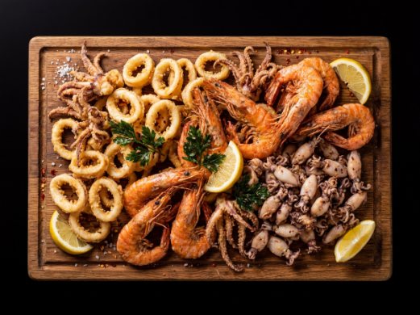
🦐Próximamente
La mejor selección frita de la Taberna: rabas, langostinos y calamaretes fritos, reunidos en una misma fuente. Para los que no pueden elegir uno solo.
Entrada · Para Compartir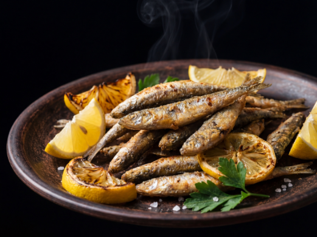
🐚Próximamente
Pequeños peces plateados del Atlántico, fritos enteros hasta quedar crujientes y dorados. Se comen de un bocado con limón exprimido. Un clásico de la costa que la Taberna mantiene con fidelidad.
Entrada · Frita · Clásico de Costa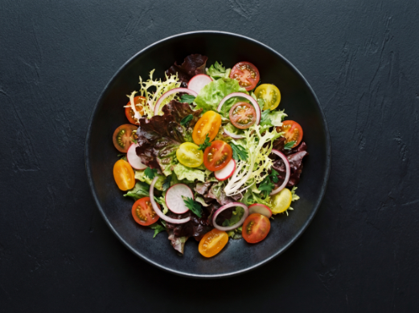
🥗Próximamente
Lechuga crocante, tomate maduro y cebolla morada con aderezo de la casa. Fresca, liviana y perfecta como entrada o acompañamiento de cualquier plato.
Ensalada · Vegetariana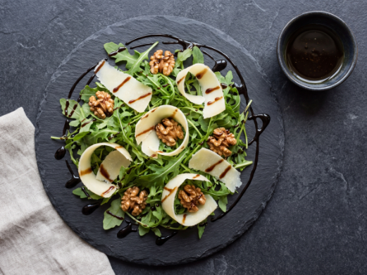
🥗Próximamente
Hojas de rúcula fresca con láminas de parmesano añejo, nueces y reducción de aceto balsámico. Un clásico de la cocina mediterránea con sabor intenso y elegante.
Ensalada · Mediterránea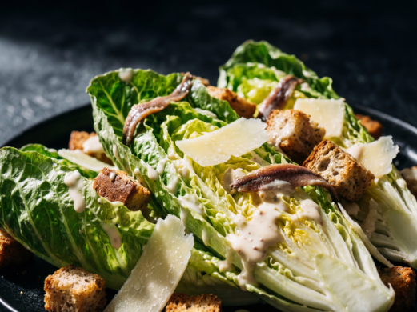
🥬Próximamente
Lechuga romana crujiente, crutones dorados, parmesano rallado y la inconfundible salsa Caesar casera con anchoas. Un clásico eterno que nunca defrauda.
Ensalada · Clásica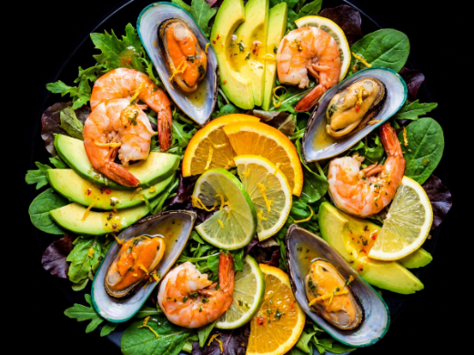
🦐Próximamente
Langostinos, mejillones y calamares sobre base de hojas verdes, tomate y palta, con aliño cítrico. Una ensalada generosa que es casi un plato principal.
Ensalada · Mariscos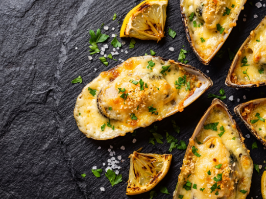
🦪Próximamente
Mejillones frescos en media valva cubiertos con mantequilla de ajo, queso parmesano y perejil, gratinados al horno hasta dorar. Se sirven chisporroteando, listos para comer de la concha.
Mariscos · Gratinado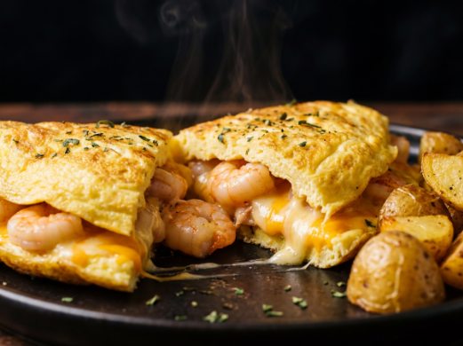
🍳Próximamente
Omelette esponjoso relleno de camarones salteados y queso parmesano fundido, acompañado de papas doradas. Un plato cálido y reconfortante con alma marinera.
Mariscos · Queso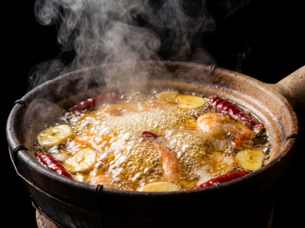
🦐Próximamente
Langostinos frescos saltados en aceite de oliva con ajo laminado y guindilla, servidos en cazuela de barro chisporroteante. Las papas acompañan para aprovechar hasta la última gota de aceite.
Gambas · Clásico Español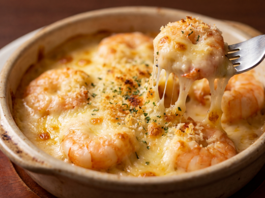
🦐Próximamente
Langostinos cubiertos con una mezcla de cuatro quesos fundidos y gratinados al horno hasta lograr una costra dorada e irresistible. Una versión indulgente y diferente del clásico.
Gambas · Gratinado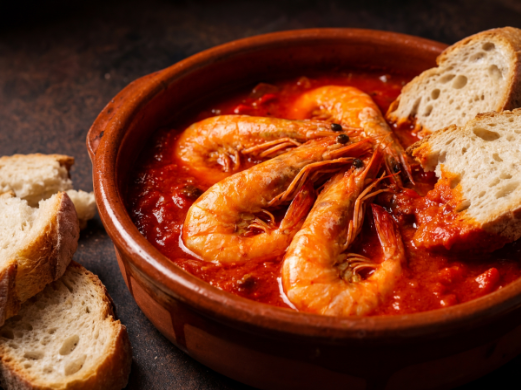
🦐Próximamente
Langostinos en salsa española de tomate, pimiento rojo asado, cebolla, ajo y vino blanco. Una cocción lenta que concentra todos los sabores del mar y la huerta. Con pan de campo para no perder ni una gota de salsa.
Gambas · Salsa Española · Recomendado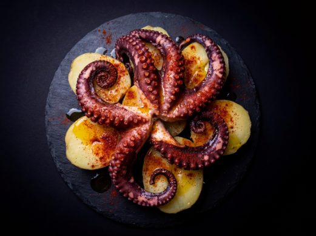
🐙Próximamente
Tentáculos de pulpo cocidos a la perfección sobre base de papas al natural, rociados con aceite de oliva virgen extra, pimentón ahumado de La Vera y sal gruesa. Un monumento a la cocina gallega en el Atlántico Sur.
Especialidad · Plato de Autor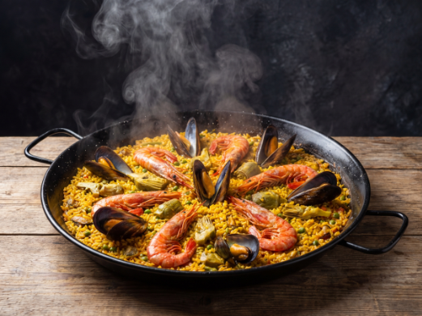
🥘Próximamente
Arroz bomba Calasparra con langostinos del Atlántico, mejillones de roca, calamares frescos y hebras de azafrán de La Mancha. Cuarenta minutos de fuego vivo. El plato que hizo famosa a la Taberna.
Paella · Plato Insignia · Para Compartir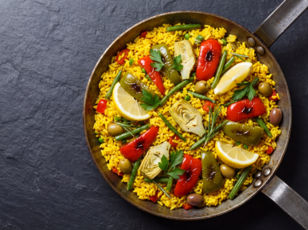
🥘Próximamente
Arroz bomba con pimiento, tomate, judías verdes, alcachofas y azafrán. Una paella honesta y colorida, llena de sabor mediterráneo. Opción ideal para quienes prefieren lo vegetal.
Paella · Vegetariana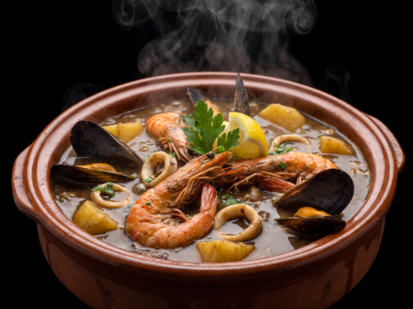
🫕Próximamente
Un guiso generoso de langostinos, mejillones, calamares y papas en caldo de mariscos especiado. Caldoso, profundo y reconfortante. Se sirve con papas para acompañar el caldo.
Mariscos · Para Compartir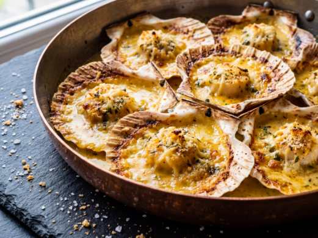
🐚Próximamente
Vieiras frescas servidas en media valva con salsa de ajo, cebolla y vino blanco, gratinadas al horno hasta dorarse. Un bocado delicado con sabor a mar concentrado.
Vieiras · Gratinado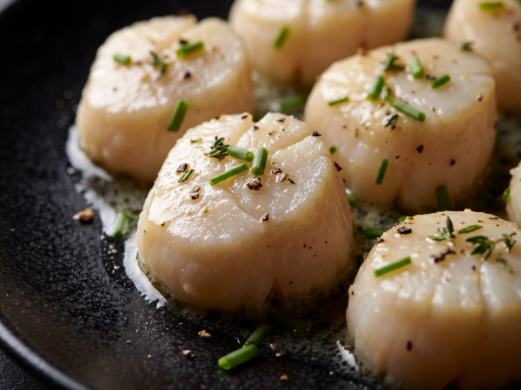
🐚Próximamente
Los músculos de las vieiras, tiernos y dulces, gratinados con mantequilla de hierbas y queso. Un plato sutil y elegante que resalta la textura única de este marisco.
Vieiras · Especialidad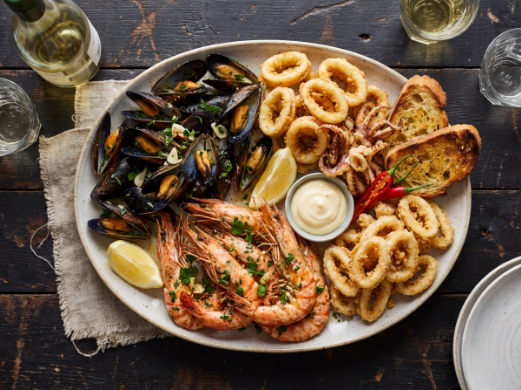
🦐Próximamente
Una selección individual de lo mejor de la casa: mejillones en salsa rosa, rabas fritas, langostinos al ajillo y calamares. Para conocer la Taberna en un solo plato.
Picada · Degustación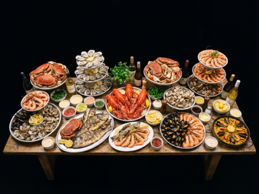
🦐Próximamente
La experiencia completa de la Taberna en una sola mesa: mejillones en salsa rosa, rabas crocantes, langostinos al ajillo, tres gratinadas variadas, cazuela de mariscos y omelette de camarones con parmesano. El festín definitivo.
Picada · Gran Formato · Para Compartir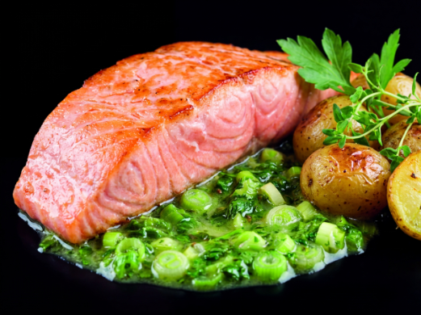
🐟Próximamente
Filete de salmón rosado sobre cremosa salsa de verdeo, suave y herbácea. Un contraste delicado entre la riqueza del pescado y la frescura de los ajíos. Servido con papas.
Pescado · Suave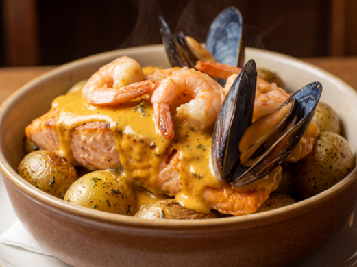
🐟Próximamente
Filete de salmón en salsa de crema verdeo enriquecida con langostinos y mejillones. Una creación de la casa que combina la untuosidad del salmón con el sabor profundo de los mariscos del Atlántico.
Pescado · Especialidad · Mariscos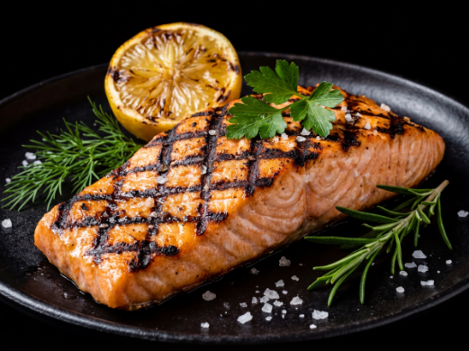
🐟Próximamente
Filete a la parrilla con marcas perfectas, piel crocante y centro jugoso. Servido con limón fresco y papas doradas. El salmón en su expresión más pura y honesta.
Pescado · A la Parrilla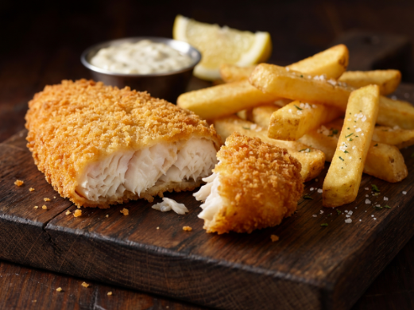
🐠Próximamente
Filete de merluza fresca envuelta en un rebozado dorado y crocante, con interior tierno y sabroso. Un clásico de la cocina española de mar con identidad propia.
Pescado · Rebozado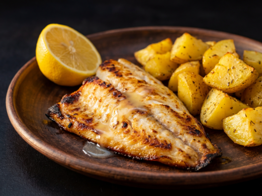
🐠Próximamente
Filete de abadejo local a la parrilla, con su textura firme y sabor delicado bien marcados. Sencillo y perfecto. Servido con limón exprimido y papas doradas al costado.
Pescado · A la Parrilla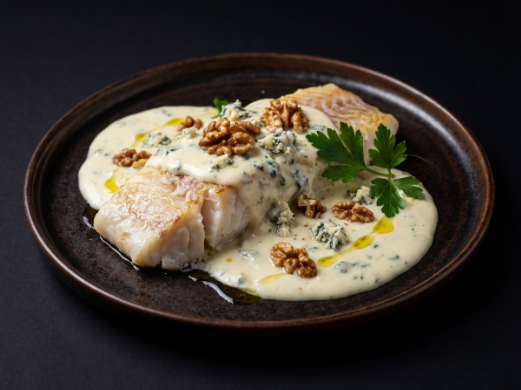
🐠Próximamente
Filete de abadejo del Atlántico cubierto con salsa de roquefort cremosa, nueces tostadas y ciboulette. Una combinación intensa y sofisticada que conquista desde el primer bocado.
Pescado · Salsa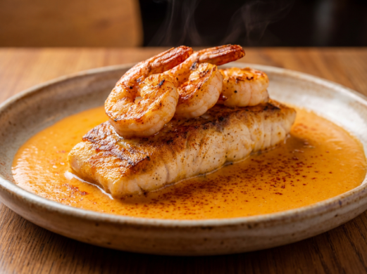
🐡Próximamente
Filete de mero de carne firme y sabrosa, bañado en una salsa cremosa de langostinos frescos del Atlántico Sur con pimentón ahumado y un toque de azafrán. Un puente entre lo más noble del mar y la tradición española. Acompañado de papas.
Pescado · Especialidad · MariscosReservas y consultas
Lun–Dom · 12:00–15:00 · 20:00–23:30 · C. 83 N° 350, Necochea